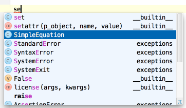

When using basic code completion (&shortcut:CodeCompletion;), you don't need to type upper-case letters in CamelHump names. It is enough to type the initial letters of the camel names in lower case, and they will be smartly recognized.

This behavior is enabled, if None is selected from the Case sensitive completion drop-down list (the Code Completion page of the Editor settings).